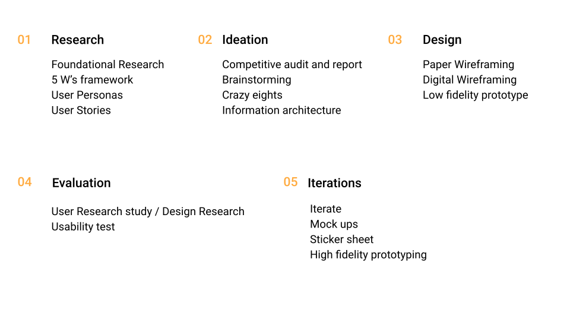
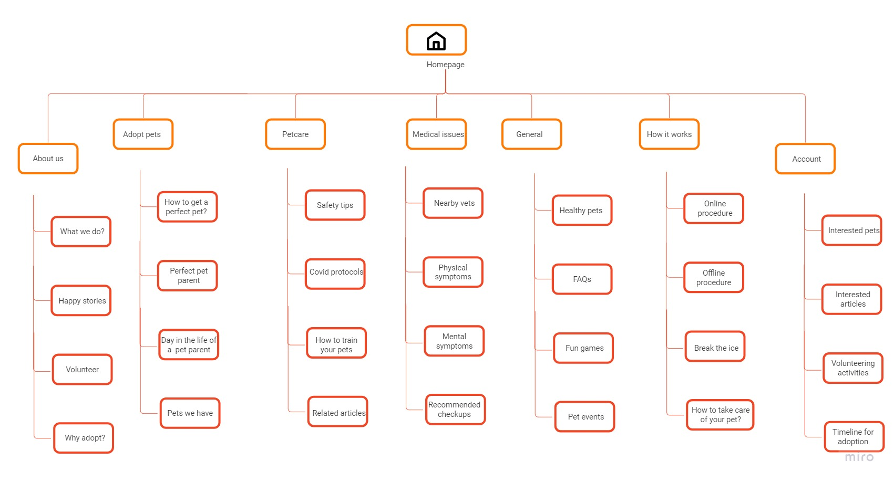
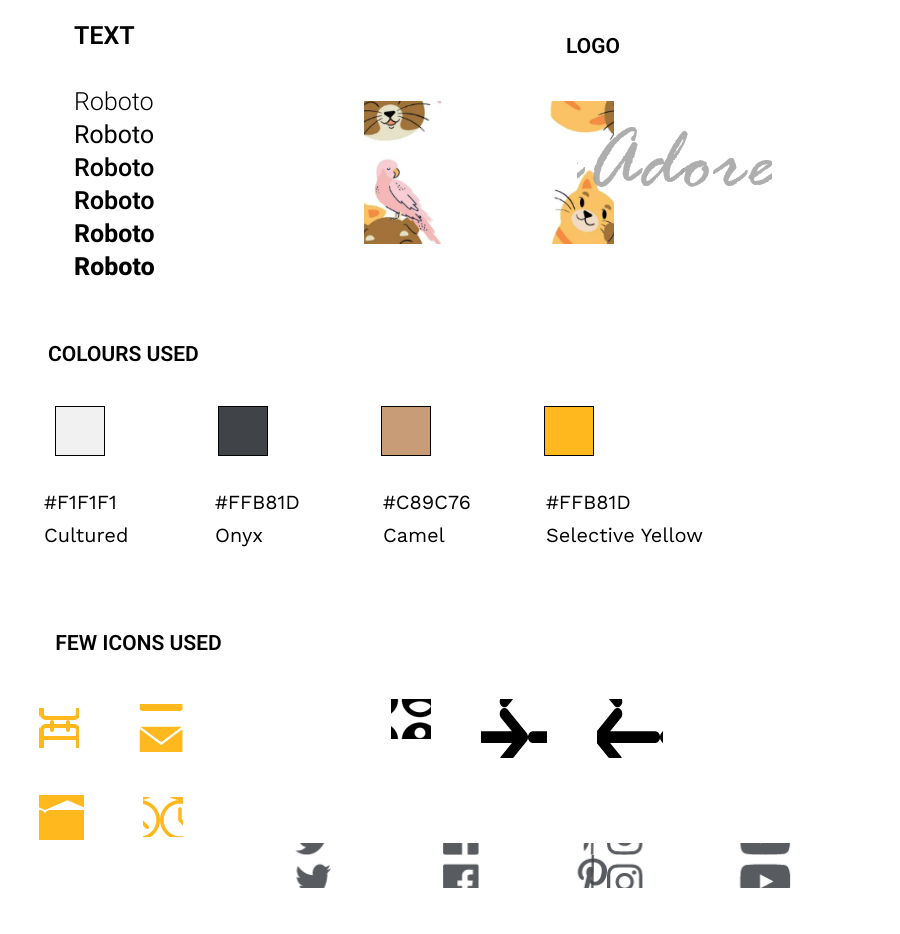
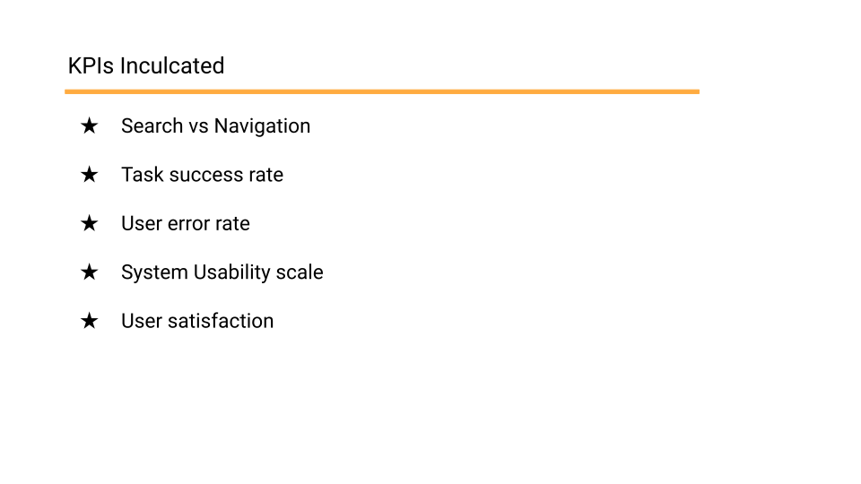
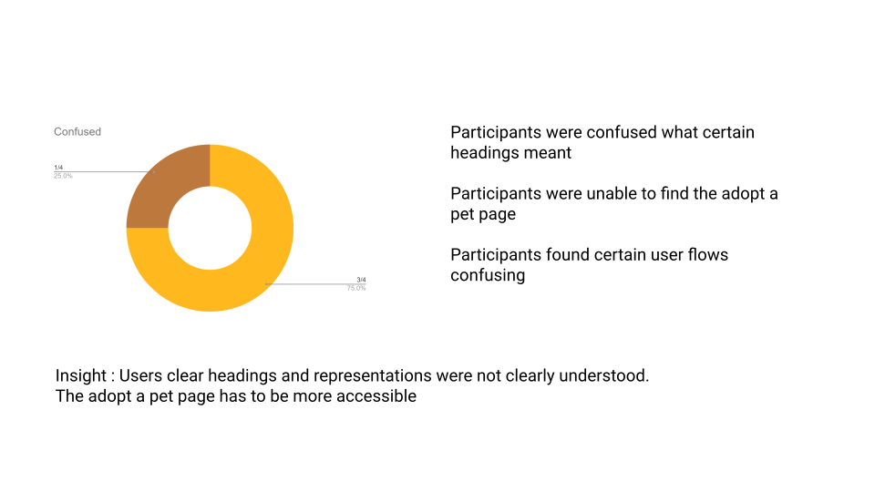
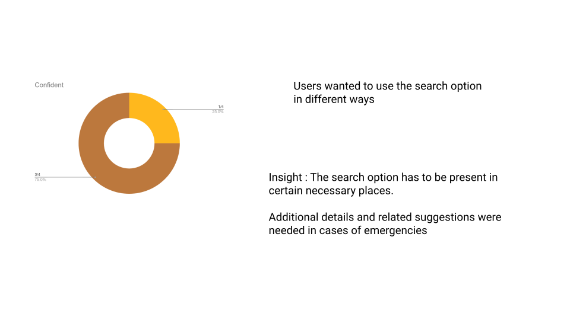
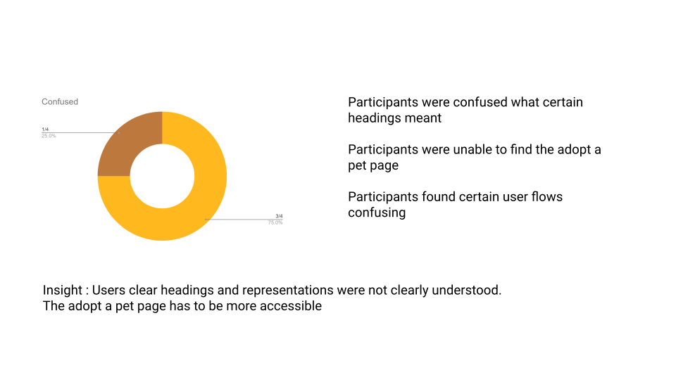
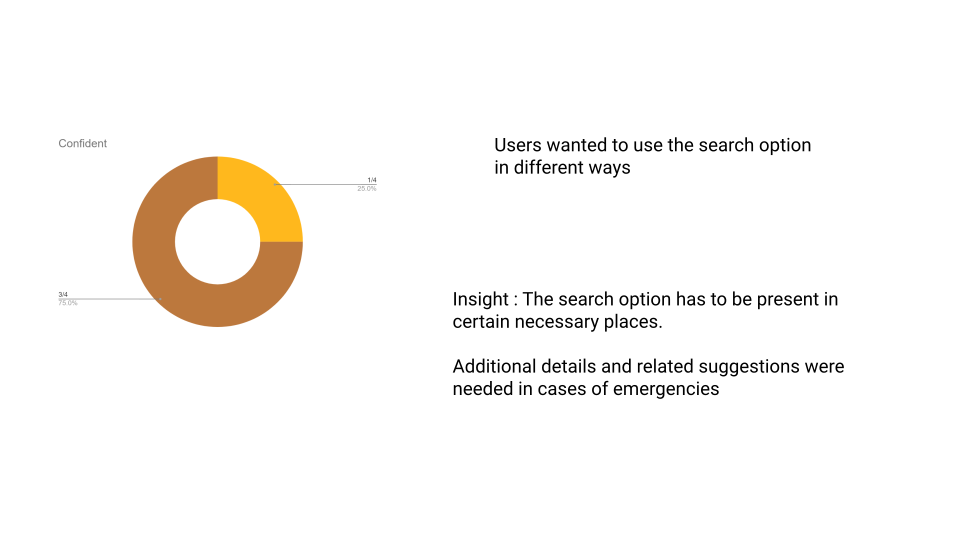

OVERVIEW
Problem
Adopting a pet is a life changing decision to begin with.Light should be shed on adopting rather than buying pets.The pet adoption process should be hassle free and easy to go through.These processes need to be as clear as possible
Most of the procedure is transferred online in the times of covid.
Importance of adopting,covering areas of petcare and what a pet parent should understand and know about the pet and making the adoption process simple and online:these are just a few goals Adore plans to accomplish and make sure you are ready when you plan to welcome a pet!
There are three parts of the problem that I have focussed on in this case study:
- Help the pet find owner who will take care of it,
- simplify the adoption process and
- help you take care of your pet.
Another two aspects that I plan to include were volunteering and donation.Many pet parents or even general citizens want to help out in their free time but are clueless of how they can help the animal shelters.So I even want to try to resolve this too through my design.

- Help the pet find owner who will take care of it,
- simplify the adoption process and
- help you take care of your pet.
Solution
I have designed Adore to resolve these solutions.It gets you to speed with how the adoption will go through.Apart from a hassle free adoption,it also gives you a map of nearby vets and medical centers.It gets you ready for your journey of getting your pet home to raising it well and taking care of it.
It even acts as a bridge if you are up for volunteering at any animal shelters or donating to them.
The main goal was to make sure people get comfortable with adopting pets and don't have any misconceptions,fears or confusion.They know that they will have someone to love them.
✨ The app was named Adore.
Pets are extremely lovable and the title of this design has something to do with what I feel about them.
That's how I came up with the name 'Adore'.
Methodology
RESEARCH
Initial research
I like to run a brief initial research session to know more about the initial problem and what I will be working on.For this project,I went through the basic adoption process and tried to approach sites as a user.
After that I went through an interview preperation stage.Interview preparation is just as important as conducting the interview.Asking the right questions gets you thinking in a particular direction and if you keep that in mind,it can be useful during the ideation stages.
I started with the term "new pet parents" and tried to learn about them as much as possible.
✨ I absolutely loves dogs and always wanted to adopt one.
My grandfather had a german shephard named Buddy with whom I have very fond memories.
Personas
I started with persona creation and aimed to experience pain points and goals through them.
I created three user personas and their basic goals and frustations are listed below:

After this stage of the empathise process,I started to create individual user journeys and analyse their individual pain points.
After the persona creation,persona developement is also important.I plan to do that through user journeys,user stories,hypothesis and the respective problem statements.
The fact that getting a pet home is fun but also involves responsibilities so I wanted my research to be solid and touch everything the represenative sample will go through.
User Stories
After listing major pain points and goals of the design,I went through with the user journeys of each of the personas highlighting the main tasks.
- I have listed a basic adoption procedure below and most of the procedure is online.The app design is primarily focussed in the first six steps.So I charted a user journey till the verification process(point number 6)
The user stories for each persona is listed below.

Problem Statements
I completed working on the persona and porceeded to create their repective problem statements and related hypothesis.
The final step of the research phase involved forming problem statements.These statements are like the main insights obtained from the research process and helped me move on to the define stage with confidence .The problem statements and the related hypothesis can be found when you click the above button to view detailed personas.
IDEATION
Initial ideation
I took two brainstorming approaches for the initial brainstorming namely Crazy eights and how might we.
Each of them was helpful in their own ways or directing the initial ideation leading on to a firm value proposition.
✨ This is a entirely personal opininon but I feel that the initial brainstorming should be as explorative and crazy as possible.
Crazy Eights
I implemented one of my favourite techniques to kickstart the ideation process.
You can see the eight columns of my ideas below:

After this,I proceeded to the how might we technique.
This helps to uncover some gap between what the present ideas are and what the design plans to accomplish.
This ideation stage sees the problem,the user,the context from many different perspectives.
The next part of the initial ideation phase was "how might we?"
These are short questions that launch brainstorming and make you think more about the environment and context to see gaps to fill in.
I review the problem statement and try to break the painpoints and other features into smaller actionable pieces.I brainstorm the HMW questions before moving forward with brainstorming the solutions.
Click the button below to see the HMW questions
-
Amp up the good
: HMW highlight all types of pets not only dogs and cats? -
Explore the opposite
: HMW make the wait the most exciting part of the trip? -
Question an assumption
: HMW streamline the adoption process and make it simpler? -
Go after adjectives
: HMW we make the process seamless and not make the person who is adopting anxious? -
ID unexpected resources
: HMW tell the users how they are helping by adopting rather than buying? -
Create an analogy from need or context
: HMW make this process similar to knowing another human ? -
Play POV against the challenge
: HMW make the website approachable and accessible whenever a person wants to adopt or take care of their pet? -
Change the status quo
: HMW decide and choose the perfect pet?HMW give the adopter regular updates about the pet? -
Break POV into pieces
: HMW consider the medical requirements of the pet?HMW keep them safe and aligned with covid protocols?
Competitive Analysis
I conducted a competitive analysis as the next step.It was divided into two parts where I conduct an audit and make a crisp report for that.
The competitive audit was conducted on the terms of the visual design, content, interaction, accessibility, and user flow.The brand's unique value proposition was also noticed.

Petfinder and Adopt a pet are the two designs I went through for the report.Both of them are direct competitors are had pretty good designs.This step was of utmost importance because I got to see the basic framework and flows of these two designs.The mistakes could be neglected and better features could be inculcated in my design making Adore better.
The competitive analysis was conducted in two stages.In the first step,the companies were individually audited and then a cumulative audit report was generated.The report had concise points and findings relating to the features of their design.
Value Proposition
The value proposition was conducted keeping all the perspectives and required features in mind.We took first timers and frequent adopters all on the scale in mind.The value proposition highlights features of the design and how have we gone about them.

This is one pf the most crucial parts of the design as it sets the features and parts on the design I have to work on.It was properly chartered and made my work easier with the basic user flows and information architecture.
Information architecture
The information architecture forms a good backbone when proceeding to build wireframes or a low fidelity prototype.
It gives my whole mockup plan a structure.It also makes it easier for me to wireframe according to it and simplifes the user flows.
For creating the information architecture,I worked along the lines of five major sections of the designs.

Then I proceeded on developing features of these sections.I explored various options to put in each categories and only the necessary ones were chosen.An excess of options could confuse the user and increase the complexity of decisions or options chosen.
The final information architecture of Adore can be seen below:
DESIGN
Sketches and Wireframes
Based on the information architecture and the basic user flow,I proceeded to draw free hand.
For this design,I used the responsive web design.I started sketching the paper wireframes for my website initially before moving on to the mobile layout.
Adore is a project which will be a responsive web design with a dedicated mobile app.
The approach that I took for sketching wireframes is also called the top down approach.In this approach,I start designing for a bigger screen sizes(laptop and tablets) before moving on to the smaller screen sizes(mobile phones).
The paper wireframes of the design can be seen below.


Prototyping
As the first step,I converted the paper wireframes to digital wireframes.
Since the design is supposed to be responsive,two different wireframes were created according to the device.This model then went for testing before increasing the fidelity.
I like to check the usability of the design with the low fidelity prototype itself as it helps user focus on the basic user flows and navigation flows more accurately.With colour or style,it may be aesthetically pleasing but it doesn't guarantee true reviews about the usability.
This is done keeping the aesthetic usability effect in mind.
This effect is again used when colours,patterns and styles are added to make sure the colours are pleasant enough to overlook a few usability concerns.

Low to high fidelity
There are two versions of the design,an app and a responsive website.This was done keeping the users in mind and how they would like to access the site.

The major processes of the app and website are given below.The onboarding process and all the other user flow are some how developed from the value proposition. I can see the features in action which were planned in the value proposition.This is why that was such a crucial step.

The major colours and styles inculcated are shown below.I chose warm colours mainly autumn tones because of their welcoming nature.I wanted the design to be bright and warm and have neutral tones that invite users to check out Adore.
The low fidelity prototype can be viewd by clicking the button given below:
EVALUATIONS AND ITERATIONS
User Testing Process
The user testing process was initiated by a user research report which described how the research was supposed to take place and how to go about the testing in order of the activities.
Some of the major design goals are highlighted below:

Another part of the report was how to measure the usability and the efficiency of the design when the participants of the study are assigned tasks. Key Performance indicators or KPIs are listed below which helped in identifying how the users are reacting to the designs and what actions are they taking.Their user flows were documented in the process and analysed later.This was an important step in identifying how the design is being used and how much does it match to the user's mental model.
Results
After the report and script was ready,the participant user study was conducted smoothly.The participants were chosen from different age groups and that helped hugely in identifying the differnet user flows one could take or the roadblocks faced by the participants.
Four participants helped me in the usability testing phase.They were allowed to browse through for a while and then were assigned basic tasks.
The performance of the design is demonstrated in the charts below where you can see in which places the design did not work and what the users expected in place of them.From this basic insights were derived which is basically where I have to iterate the design.
 



After finding common patterns in the results of the testing phase,they were grouped together to form insights which I have to further work on.The insights were prioritised according to their position in the user flows and the iteration was followed through.
Given below is an affinity diagram of the insights gathered.
.jpg)